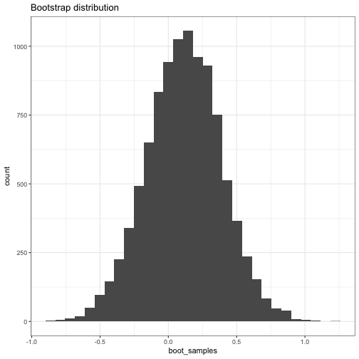
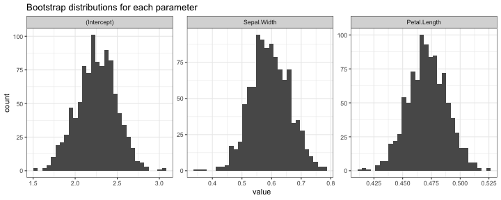

Object-oriented programming
Reading: Matloff, Chapter 9
Agenda for today:
What is object-oriented programming?
Two main concepts, classes and methods.
A class defines a type of object: what sort of data is associated with it, what are valid values for the data, what methods can be called on it.
Every object is an instance of a class.
A method is a function associated with a particular type of object.
In R
S3: Very informal versions of classes, lists with a "class" attribute, allowing for one-argument method dispatch.
S4: Formal classes, class definitions, methods, considered safer but with more overhead.
Both types support generic functions: functions that have different behavior depending on the class of the arguments passed to them.
S3 classes
An S3 class is a list with an extra class attribute.
Class instantiation is by creating a list and setting the class attribute.
Object orientation is only through generic functions.
For example:
joe = list(name = "Joe", salary = 55000, union = TRUE)
class(joe) = "employee"
attributes(joe)
## $names
## [1] "name" "salary" "union"
##
## $class
## [1] "employee"
print(joe)
## $name
## [1] "Joe"
##
## $salary
## [1] 55000
##
## $union
## [1] TRUE
##
## attr(,"class")
## [1] "employee"
Generic functions/method dispatch for S3 classes
A generic function is a function whose behavior depends on what class its arguments are.
We have seen functions like print, plot, summary, all of which are generic.
Generic functions are very simple: usually just a call to UseMethod
print
## function (x, ...)
## UseMethod("print")
## <bytecode: 0x7fdd45973258>
## <environment: namespace:base>
plot
## standardGeneric for "plot" defined from package "graphics"
##
## function (x, y, ...)
## standardGeneric("plot")
## <environment: 0x7fdd4583b660>
## Methods may be defined for arguments: x, y
## Use showMethods("plot") for currently available ones.
mean
## function (x, ...)
## UseMethod("mean")
## <bytecode: 0x7fdd482fcc28>
## <environment: namespace:base>
Methods:
A method is the function that is actually called on a specific class.
In S3, a method for a given class and generic function is just a function with name generic.class.
For example: print.lm, plot.lm are the methods for the lm class associated with the print and plot generic functions.
To see that they are really just normal functions, try typing stats:::plot.lm or stats:::print.lm in your R console.
To define a method associated with a class you have created, define a function with name generic.class
Method dispatch:
Method dispatch refers to how R decides what method to use when a generic functions is called.
The UseMethod function is what does this for S3, and it just works by name matching.
Example:
print.employee = function(x) {
cat(x$name, "\n")
cat("salary", x$salary, "\n")
cat("union member", x$union, "\n")
}
print(joe)
## Joe
## salary 55000
## union member TRUE
joe
## Joe
## salary 55000
## union member TRUE
S4 classes
S4 classes have three properties:
A class name
A representation: A list of slots giving names and classes for the objects associated with the class.
A vector of classes it inherits from (we won't use inheritance in this class, but you should know it's available to you).
S4 class definition
Syntax: setClass(class_name, class_representation, contains)
class_name is the name of the class.
class_representation is a list decribing the slots and their types.
contains describes the inheritance.
For example:
setClass("employee",
representation(
name = "character",
salary = "numeric",
union = "logical"))
Note: This function breaks one of our rules from the beginning: it's called for its side effect. It assigns an object defining the class, and also returns invisibly a class generation function.
rm(list = ls(all.names = TRUE))
ls(all.names = TRUE)
## character(0)
setClass("employee",
representation(
name = "character",
salary = "numeric",
union = "logical"))
ls(all.names = TRUE)
## [1] ".__C__employee"
.__C__employee
## Class "employee" [in ".GlobalEnv"]
##
## Slots:
##
## Name: name salary union
## Class: character numeric logical
Don't use setClass this way: it's just to show you that the method returns a class creation function.
class_creation_fn = setClass("employee",
representation(
name = "character",
salary = "numeric",
union = "logical"))
jane = class_creation_fn(name = "Jane", salary = 55000, union = FALSE)
jane
## Jane has a salary of 55000 and is not in the union
S4 class instantiation
To make an object of a given S4 class, use new
Syntax: new(class, representation)
joe = new("employee", name = "Joe", salary = 55000, union = TRUE)
joe
## Joe has a salary of 55000 and is in the union
Data access in S4 classes
Slot access is with @, not $: object@slot will give the data associated with slot in object.
joe@salary
## [1] 55000
joe$salary
## Error in joe$salary: $ operator not defined for this S4 class
Generic functions and methods for S4 classes
Remember:
Syntax for setting a method associated with a generic function: setMethod(generic, signature, fn)
generic is a string specifying the generic function for which we want to specify a class-specific method.
signature describes the classes of the arguments.
fn is the function we want to use for tha specified combination of generic function and argument classes.
For example: show is a generic function used to print S4 objects.
We can create a method associated with the show generic function and the employee S4 class as follows:
setMethod("show", signature = signature("employee"), definition = function(object) {
inorout = ifelse(object@union, "is", "is not")
cat(object@name, "has a salary of", object@salary, "and", inorout, "in the union", "\n")
})
show(joe)
## Joe has a salary of 55000 and is in the union
joe
## Joe has a salary of 55000 and is in the union
A longer example
Remember our bootstrap example from last time?
Now, in addition to computing confidence intervals, we want to plot the bootstrap sampling distributions.
Last time we settled on the following set of functions.
bootstrap_ci = function(data, estimator, alpha, B) {
boot_estimates = get_boot_estimates(data, estimator, B)
boot_ci = get_ci(boot_estimates, alpha)
return(boot_ci)
}
get_boot_estimates = function(data, estimator, B) {
boot_estimates = replicate(B, expr = {
boot_data = get_bootstrap_sample(data)
boot_estimate = estimator(boot_data)
return(boot_estimate)
})
return(boot_estimates)
}
get_ci = function(estimates, alpha) {
ci_lo = alpha / 2
ci_hi = 1 - (alpha / 2)
if(!is.null(dim(estimates))) {
## if we have multi-dimensional estimates
cis = plyr::aaply(estimates, 1, function(x) quantile(x, probs = c(ci_lo, ci_hi)))
} else {
## if we have one-dimensional estimates
cis = quantile(estimates, probs = c(ci_lo, ci_hi))
}
return(cis)
}
get_bootstrap_sample = function(data) {
if(!is.null(dim(data))) {
## in this case, data is rectangular, and we want to sample rows
n = dim(data)[1]
boot_idx = sample(1:n, size = n, replace = TRUE)
bootstrap_sample = data[boot_idx,]
} else {
## in this case, data is a vector and we want to sample elements of the vector
n = length(data)
boot_idx = sample(1:n, size = n, replace = TRUE)
bootstrap_sample = data[boot_idx]
}
return(bootstrap_sample)
}
Notice that the output from get_boot_estimates could be used for a lot of different tasks
Last time we used it to get bootstrap confidence intervals
We could also use it to get bootstrap standard errors, or make plots, or do anything else that depends on the set of bootstrap samples.
Let's try making it into its own class and setting some methods for common operations.
First step: Modify the function so it returns something with a class attribute.
get_boot_estimates = function(data, estimator, B) {
boot_estimates = replicate(B, expr = {
boot_data = get_bootstrap_sample(data)
boot_estimate = estimator(boot_data)
return(boot_estimate)
})
class(boot_estimates) = "boot_dist"
return(boot_estimates)
}
Setond step: Create methods for the boot_dist class associated with the plot and print generic functions.
library(ggplot2)
plot.boot_dist = function(x) {
ggplot(data.frame(boot_samples = as.vector(x))) +
geom_histogram(aes(x = boot_samples)) +
ggtitle("Bootstrap distribution")
}
print.boot_dist = function(x) {
n = length(x)
cat("Bootstrap distribution object,", n, "bootstrap samples\n")
cat("Bootstrap standard error:", sd(x), "\n")
}
Check whether it works:
boot_dist = get_boot_estimates(rnorm(1:10), estimator = mean, B = 10000)
boot_dist
## Bootstrap distribution object, 10000 bootstrap samples
## Bootstrap standard error: 0.2735983
plot(boot_dist)
## `stat_bin()` using `bins = 30`. Pick better value with `binwidth`.

Example with S4 classes
The functions above only work if we're getting bootstrap distributions for one parameter at a time.
data(iris)
iris_coef_estimator = function(d) {
iris_lm = lm(Sepal.Length ~ Sepal.Width + Petal.Length, data = d)
iris_coef = coef(iris_lm)
return(iris_coef)
}
boot_dist = get_boot_estimates(iris, iris_coef_estimator, B = 1000)
For the next example, we'll both fix this problem and show how you would use S4 classes instead of S3 classes.
First step: set an S4 class for the bootstrap distribution.
setClass("boot_dist",
representation = list(boot_samples = "matrix", nparams = "numeric", nboot = "numeric"))
ls(all.names = TRUE)
## [1] ".__C__boot_dist" ".__C__employee" ".__T__show:methods"
## [4] ".Random.seed" "boot_dist" "bootstrap_ci"
## [7] "class_creation_fn" "get_boot_estimates" "get_bootstrap_sample"
## [10] "get_ci" "iris" "iris_coef_estimator"
## [13] "jane" "joe" "plot.boot_dist"
## [16] "print.boot_dist"
Then we modify the get_boot_estimates function to return an object of the boot_dist class.
get_boot_estimates = function(data, estimator, B) {
boot_estimates = replicate(B, expr = {
boot_data = get_bootstrap_sample(data)
boot_estimate = estimator(boot_data)
return(boot_estimate)
})
boot_dist_object = make_bd_object(boot_estimates)
return(boot_dist_object)
}
## takes either a vector or a matrix and creates a boot_dist object
make_bd_object <- function(estimates) {
if(is.null(dim(estimates))) { ## if estimates is a vector
nparams = 1
nboot = length(estimates)
estimates = matrix(estimates, nrow = 1)
} else { ## if estimates is a matrix
nparams = nrow(estimates)
nboot = ncol(estimates)
}
bd = new("boot_dist", boot_samples = estimates, nparams = nparams, nboot = nboot)
return(bd)
}
Next step: set method corresponding to the show generic:
setMethod("show", signature = "boot_dist", function(object) {
cat("Bootstrap distribution object,", object@nboot, "bootstrap samples\n")
cat("Number of parameters:", object@nparams, "\n")
cat("Bootstrap estimate of standard error:", apply(object@boot_samples, 1, sd), "\n")
})
Set method corresponding to the plot generic:
setMethod("plot", signature = "boot_dist", function(x) {
melted_samples = melt(x@boot_samples)
if(x@nparams == 1) {
ggplot(melted_samples) +
geom_histogram(aes(x = value)) +
ggtitle("Bootstrap distribution")
} else {
ggplot(melted_samples) +
geom_histogram(aes(x = value)) +
facet_wrap(~ Var1, scales = "free") +
ggtitle("Bootstrap distributions for each parameter")
}
})
And finally see whether it works:
boot_dist = get_boot_estimates(rnorm(10), estimator = mean, B = 100)
boot_dist
## Bootstrap distribution object, 100 bootstrap samples
## Number of parameters: 1
## Bootstrap estimate of standard error: 0.2194793
plot(boot_dist)
## `stat_bin()` using `bins = 30`. Pick better value with `binwidth`.
And for multiple parameters:
boot_dist_iris_coef = get_boot_estimates(iris, iris_coef_estimator, B = 1000)
boot_dist_iris_coef
## Bootstrap distribution object, 1000 bootstrap samples
## Number of parameters: 3
## Bootstrap estimate of standard error: 0.2337576 0.0655192 0.01708353
plot(boot_dist_iris_coef)
## `stat_bin()` using `bins = 30`. Pick better value with `binwidth`.
